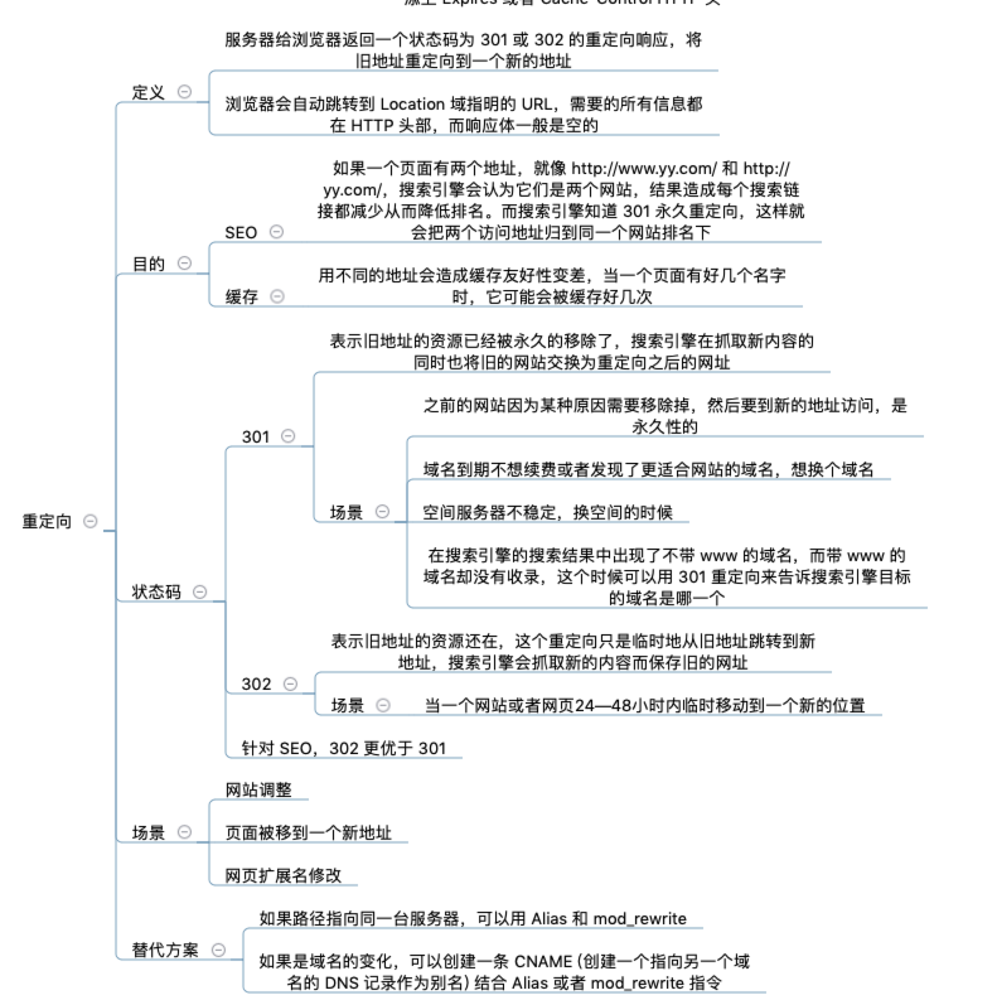

Daily-Interview-Question 121-130
- Daily-Interview-Question 121-130
- 第 121 题：统计 1 ~ n 整数中出现 1 的次数。
- 第 122 题：webpack 打包 vue 速度太慢怎么办？
- 第 123 题：vue 是如何对数组方法进行变异的？例如 push、pop、splice 等方法
- 第 124 题：永久性重定向（301）和临时性重定向（302）对 SEO 有什么影响
- 第 125 题：如何将 [{id: 1}, {id: 2, pId: 1}, ...] 的重复数组（有重复数据）转成树形结构的数组 [{id: 1, child: [{id: 2, pId: 1}]}, ...] （需要去重）
- 第 126 题：扑克牌问题
- 第 127 题：如何用 css 或 js 实现多行文本溢出省略效果，考虑兼容性
- 第 128 题：Http 状态码 301 和 302 的应用场景分别是什么
- 第 129 题：输出以下代码执行结果
- 第 130 题：输出以下代码执行结果，大致时间就好（不同于上题）
第 121 题：统计 1 ~ n 整数中出现 1 的次数。
例如统计 1 ~ 400W 出现 1 的次数。
为啥都是暴力循环，这不都是算法题吗？ 分析归纳一下，按照每一位上的数字来分析 比如55， 个位可能产生的 1 是 6个(1, 11, 21, 31, 41, 51, 注意这里11只计算的个位的1)， 十位5 可能产生的 1是 10个，(10 - 19， 这里的11只计算的十位的1)；
比如222， 个位 可能产生的 1 是 23个(1, 11, 21, ... 221, 只关注个位)， 十位2 可能产生的 1是 30个(10-19, 110-119, 210-219, 只关注十位), 百位2 产生的 1是100个(100 - 199， 只关注百位).
以此类推， 每一位数字可能产生的1的个数跟他的高位部分和低位部分相关： 其中0和1需要特殊处理，代码如下
function countOne(n) {
var factor = 1;
let count = 0;
let next = parseInt(n / factor);
while (next !== 0) {
var lower = n - next * factor
var curr = next % 10;
var high = parseInt(n / (10 * factor));
if (curr === 0) {
count += high * factor;
} else if (curr === 1) {
count += high * factor + lower + 1
} else {
count += (high + 1) * factor
}
factor *= 10;
next = parseInt(n / factor);
}
return count;
}
function count(n) {
let res = 0;
for (let i = 0; i <= n; i += 1) {
`${i}`.split('').forEach(item => {
if (item === '1') {
res += 1;
}
})
};
return res;
}
console.time('count');
console.log(count(4000000));
console.timeEnd('count');
// 3400000
//count: 589.424ms
function countOne(n) {
var factor = 1;
let count = 0;
let next = parseInt(n / factor);
while (next !== 0) {
var lower = n - next * factor
var curr = next % 10;
var high = parseInt(n / (10 * factor));
if (curr === 0) {
count += high * factor;
} else if (curr === 1) {
count += high * factor + lower + 1
} else {
count += (high + 1) * factor
}
factor *= 10;
next = parseInt(n / factor);
}
return count;
}
console.time('count');
console.log(countOne(4000000));
console.timeEnd('count');
// 3400000
// count: 2.363ms
先找规律
按递归的思路思考一个整数，比如n = 388，
我们可以把0-388划成四部分：
- 0 - 99
- 100 - 199
- 200 - 299
- 300 -388
对于前三个部分，如果我们省略最高位的话，那它们就是相同问题，可以归结为 howManyOnes(99) * 3；
对于最后一个部分，就是 howManyOnes(88)；
最后再考虑 100 - 199 这部分，因为388大于100，因此包含了所有最高位是1的100个整数；
因此，1的总数 = howManyOnes(99) * 3 + howManyOnes(88) + 100 = 179。
那么对于最高位不大于1的整数呢? 也很容易得到规律，比如n = 166：
我们可以把0-166划成两部分：
- 0 - 99
- 100 - 166
同样的，我们先考虑第一部分，即howManyOnes(99)；
然后再看第二部分，先拿到howManyOnes(66)，然后再统计100 - 166之间最高位是1的整数，是 66 + 1 个；
因此，1的总数 = howManyOnes(99) + howManyOnes(66) + 66 + 1 = 104。
代码实现
function howManyOnes(n) {
if (n < 1) {
return 0
}
if (n < 10) {
return 1
}
const str = String(n)
const rest = Number(str.slice(1))
const power = 10 ** (str.length - 1)
const head = Number(str.slice(0, 1))
if (head === 1) {
return howManyOnes(rest) + howManyOnes(power - 1) + rest + 1
} else {
return howManyOnes(rest) + power + howManyOnes(power - 1) * head
}
}
console.time('count');
console.log(howManyOnes(4000000));
console.timeEnd('count');
// count: 0.298095703125ms
function countOne(n) {
let str = JSON.stringify(n);
return str.match(eval("/1/ig")).length;
}
console.log(countOne([1,111,11111,11110])) // 13
第 122 题：webpack 打包 vue 速度太慢怎么办？
- happypack多线程插件，DllPlugin
"打包慢"，是一个综合的因素，和vue关系不大。
1：确保下webpack，npm, node 及主要库版本要新，比如：4.x比3.x提升很多。
2：loader范围缩小到src项目文件！一些不必要的loader能关就关了吧
3：eslint代码校验其实是一个很费时间的一个步奏。
- 可以把eslint的范围缩小到src,且只检查.js 和 .vue
- 生产环境不开启lint，使用pre-commit或者husky在提交前校验
4：happypack多进程进行
如果上面优化后，时间还是不满意的话，就尝试下5,6吧。
5：动态链接库（DllPlugin），楼上已说。有点类似配置的externals。 补充一下： 缺点：将不能按需加载，会将配置的第三方库全部打包进去。 推荐：可以将使用率较高的包采用dll方案。
6：HardSourceWebpackPlugin会将模块编译后进行缓存，第一次之后速度会明显提升。
- 使用最新版的webpack，官方会优化模块的解析速度
- 缩小loader的查询范围，例如：rules中loader添加：
include: path.resolve(__dirname, 'src') - 用DllPlugin插件单独编译一些不经常改变的代码，比如node_modules的第三方库
- 删除不需要的一些代码，利用SplitChunksPlugin 进行分块
- cache-loader来进行缓存持久化
- 不同的devtool配置也会影响性能，最好配置为‘eval’，或者‘cheap-module-eval-source-map’
第 123 题：vue 是如何对数组方法进行变异的？例如 push、pop、splice 等方法
直接上源码
const arrayProto = Array.prototype
export const arrayMethods = Object.create(arrayProto)
const methodsToPatch = [
'push',
'pop',
'shift',
'unshift',
'splice',
'sort',
'reverse'
]
/**
* Intercept mutating methods and emit events
*/
methodsToPatch.forEach(function (method) {
// cache original method
const original = arrayProto[method]
def(arrayMethods, method, function mutator (...args) {
const result = original.apply(this, args)
const ob = this.__ob__
let inserted
switch (method) {
case 'push':
case 'unshift':
inserted = args
break
case 'splice':
inserted = args.slice(2)
break
}
if (inserted) ob.observeArray(inserted)
// notify change
ob.dep.notify()
return result
})
})
简单来讲，重写了数组中的那些方法，首先获取到这个数组的ob,也就是它的Observer对象，如果有新的值，就调用observeArray继续对新的值观察变化，然后手动调用notify，通知渲染watcher，执行update
为什么要对数组进行单独处理 在Vue现有阶段中，对响应式处理利用的是Object.defineProperty对数据进行拦截，而这个方法并不能监听到数组内部变化，数组长度变化，数组的截取变化等，所以我们需要对这些操作进行hack，让vue能监听到其中的变化。
怎么对数组进行处理
methodsToPatch.forEach(function(method) { // cache original method // 获取原方法 var original = arrayProto[method]; // def方法重新定义arrayMethods的method方法，然后将新的取值方法赋值 def(arrayMethods, method, function mutator() { var args = [], len = arguments.length; while (len--) args[len] = arguments[len]; var result = original.apply(this, args); var ob = this.__ob__; var inserted; switch (method) { case 'push': case 'unshift': // [].push(1),[].unshift(1) // arg = [1] inserted = args; break case 'splice': // [1,2,3].splice(0,1,1) // 第三个参数为插入的值 inserted = args.slice(2); break } if (inserted) { ob.observeArray(inserted); } // 监听变化，如果不是插入操作直接循环响应 // 如果是去除数组参数方法，触发一次notify将会重新计算 // 如果仅仅是数字数据，任何操作只需要再次执行一次notify则可以 // 但是如果新增的是一个对象类型，就需要重新监听 // 为什么用角标和length属性不能监听的原因是因为无法触发obj的get方法，所以没法动态监听 // notify change ob.dep.notify(); return result }); });正如该题所问，vue对push,pop,splice等方法进行了hack，hack方式很简单，如果加入新对象，对新对象进行响应式化，至于如何响应式化请参考vue源码。
举例来说对于push和unshift会推入一个新的对象到数组里(不管从前还是从后),记录这个加入的对象，并调用Observe方法将加入的对象转换成响应式对象,对于splice方法，如果加入了新对象也是将该对象响应式化。
最后一步是向外抛出数组变化，提醒观察者进行更新。
存在问题
对于Object.defineProperty的缺陷导致如果直接改变数组下标是无法hack的，由于此点，vue提供了$set方法，最新的解决方案当然是利用Proxy对象进行监听，但是Proxy的缺陷在于兼容性，可能会为了性能以及便利而放弃兼容性吧，一切都要看尤大的决定了。ps
不知道啥时候3.0才能出来，都等到迫不及待了。
第 124 题：永久性重定向（301）和临时性重定向（302）对 SEO 有什么影响
301 redirect——301代表永久性转移(Permanently Moved)，301重定向是网页更改地址后对搜索引擎友好的最好方法，只要不是暂时搬移的情况,都建议使用301来做转址。 如果我们把一个地址采用301跳转方式跳转的话，搜索引擎会把老地址的PageRank等信息带到新地址，同时在搜索引擎索引库中彻底废弃掉原先的老地址。旧网址的排名等完全清零
302 redirect——302代表暂时性转移(Temporarily Moved )，在前些年，不少Black Hat SEO曾广泛应用这项技术作弊，目前，各大主要搜索引擎均加强了打击力度，象Google前些年对Business.com以及近来对BMW德国网站的惩罚。即使网站客观上不是spam，也很容易被搜寻引擎容易误判为spam而遭到惩罚。
第 125 题：如何将 [{id: 1}, {id: 2, pId: 1}, ...] 的重复数组（有重复数据）转成树形结构的数组 [{id: 1, child: [{id: 2, pId: 1}]}, ...] （需要去重）
哈希表，时间复杂度O(n)
const fn = arr => {
const res = []
// const map = arr.reduce((res, item) => ((res[item.id] = item), res), {})
const map = arr.reduce((res, item) => ((res[item.id] = Object.assign({}, item)), res), {}) // 复制一下对象，否则会修改原数组
for (const item of Object.values(map)) {
if (!item.pId) {
res.push(item)
} else {
const parent = map[item.pId]
parent.child = parent.child || []
parent.child.push(item)
}
}
return res
}
// const arr = [{id: 1}, {id:2, pId: 1}, {id: 3, pId: 2}, {id: 4}, {id:3, pId: 2}, {id: 5, pId: 4}]
// fn(arr) => [{id: 1, child: [{id: 2, pId: 1, child: [{ id: 3, pId: 2}]}]}, {id: 4, child: [{id: 5, pId: 4}]}]
+1 9 tada 3
第 126 题：扑克牌问题
有一堆扑克牌，将牌堆第一张放到桌子上，再将接下来的牌堆的第一张放到牌底，如此往复；
最后桌子上的牌顺序为： (牌底) 1,2,3,4,5,6,7,8,9,10,11,12,13 (牌顶)；
问：原来那堆牌的顺序，用函数实现。
function poke(arr) {
let i = 1
let out = []
while (arr.length) {
if (i % 2) {
out.push(arr.shift())
} else {
arr.push(arr.shift())
}
i++
}
return out
}
function reverse(arr) {
let i = 1
let out = []
while (arr.length) {
if (i % 2) {
out.unshift(arr.pop())
} else {
out.unshift(out.pop())
}
i++
}
return out
}
reverse([1,2,3,4,5,6,7,8,9,10,11,12,13 ])
// [1, 12, 2, 8, 3, 11, 4, 9, 5, 13, 6, 10, 7]4
/**
* 逆向：即从桌牌到手牌
* @param {*} 桌牌序列 arr
*/
function recover(arr) {
const res = []
while (arr.length > 0) {
if (res.length) {
res.push(res.shift())
}
const item = arr.pop()
res.push(item)
}
return res
}
/**
* 正向：即从手牌到桌牌（用于检验结果）
* @param {*} 手牌序列arr
*/
function generate(arr) {
const res = []
while (arr.length > 0) {
const item = arr.pop()
res.push(item)
if (arr.length) {
arr.unshift(arr.pop())
}
}
return res
}
recover([1, 2, 3, 4, 5, 6, 7, 8, 9, 10, 11, 12, 13])
// [7, 10, 6, 13, 5, 9, 4, 11, 3, 8, 2, 12, 1]
generate([7, 10, 6, 13, 5, 9, 4, 11, 3, 8, 2, 12, 1])
// [1, 2, 3, 4, 5, 6, 7, 8, 9, 10, 11, 12, 13]
第 127 题：如何用 css 或 js 实现多行文本溢出省略效果，考虑兼容性
单行：
overflow: hidden;
text-overflow:ellipsis;
white-space: nowrap;
多行：
display: -webkit-box;
-webkit-box-orient: vertical;
-webkit-line-clamp: 3; //行数
overflow: hidden;
兼容：
p{position: relative; line-height: 20px; max-height: 40px;overflow: hidden;}
p::after{
content: "..."; position: absolute; bottom: 0; right: 0; padding-left: 40px;
background: -webkit-linear-gradient(left, transparent, #fff 55%);
background: -o-linear-gradient(right, transparent, #fff 55%);
background: -moz-linear-gradient(right, transparent, #fff 55%);
background: linear-gradient(to right, transparent, #fff 55%);
}
p.line {
overflow: hidden;
-ms-text-overflow: ellipsis;
text-overflow: ellipsis;
display:-webkit-box; //将对象作为弹性伸缩盒子模型显示。
-webkit-box-orient:vertical; //从上到下垂直排列子元素（设置伸缩盒子的子元素排列方式）
-webkit-line-clamp: 2; // 显示行数，超出两行隐藏且多余的用省略号表示...
line-clamp: 2;
max-width: 210px; // 有必要定义max-width
}
JS实现版本
- 使用split + 正则表达式将单词与单个文字切割出来存入words
- 加上 '...'
- 判断scrollHeight与clientHeight，超出的话就从words中pop一个出来
// <p>这是一段测试文字，this is some test text，测试文字，测试文字测 </p>
const p = document.querySelector('p')
let words = p.innerHTML.split(/(?<=[\u4e00-\u9fa5])|(?<=\w*?\b)/g)
while (p.scrollHeight > p.clientHeight) {
words.pop()
p.innerHTML = words.join('') + '...'
}
第 128 题：Http 状态码 301 和 302 的应用场景分别是什么
- 301：永久重定向； 搜索引擎在抓取新的内容的同时也将旧的网址替换为了重定向之后的网址
- 302：临时重定向； 搜索引擎会抓取新的内容而保留旧的地址，因为服务器返回302，所以，搜索搜索引擎认为新的网址是暂时的

第 129 题：输出以下代码执行结果
function wait() {
return new Promise(resolve =>
setTimeout(resolve, 10 * 1000)
)
}
async function main() {
console.time();
const x = wait();
const y = wait();
const z = wait();
await x;
await y;
await z;
console.timeEnd();
}
main();
三个任务发起的时候没有await，可以认为是同时发起了三个异步。之后各自await任务的结果。结果按最高耗时计算，由于三个耗时一样。所以结果是 10 * 1000ms
function wait() {
return new Promise(resolve =>
setTimeout(resolve, 10 * 1000)
)
}
async function main() {
console.time();
const x = await wait(); // 每个都是都执行完才结,包括setTimeout（10*1000）的执行时间
const y = await wait(); // 执行顺序 x->y->z 同步执行，x 与 setTimeout 属于同步执行
const z = await wait();
console.timeEnd(); // default: 30099.47705078125ms
console.time();
const x1 = wait(); // x1,y1,z1 同时异步执行， 包括setTimeout（10*1000）的执行时间
const y1 = wait(); // x1 与 setTimeout 属于同步执行
const z1 = wait();
await x1;
await y1;
await z1;
console.timeEnd(); // default: 10000.67822265625ms
console.time();
const x2 = wait(); // x2,y2,z2 同步执行，但是不包括setTimeout（10*1000）的执行时间
const y2 = wait(); // x2 与 setTimeout 属于异步执行
const z2 = wait();
x2,y2,z2;
console.timeEnd(); // default: 0.065185546875ms
}
main();
第 130 题：输出以下代码执行结果，大致时间就好（不同于上题）
function wait() {
return new Promise(resolve =>
setTimeout(resolve, 10 * 1000)
)
}
async function main() {
console.time();
await wait();
await wait();
await wait();
console.timeEnd();
}
main();
30s多一点
调用wait函数时加上了await修饰符，导致主流程的执行必须要等待wait函数执行完才会陆续执行后续函数，相当于 await wait() => promise -> wait() -> resolve()。
但是wait函数本身又写了一个promise，整个promise会setTimeout才resolve，相当于本身wait函数 => promise -> setTimeout(resolve)。
那么整个串起来，流程有点类似下面这样子，promise的嵌套，只有等内部wait函数的promise -> resolve之后，才会将外部的promise -> resolve掉。然后再去执行下一个wait函数。
main -> wait -> promise -> (promise -> setTimeout(resolve))(resolve)
为啥要30s多一点，额，写入微任务队列，微任务队列里再写入任务队列，都是需要时间。
这道题可以这样看执行顺序和每一步消耗的时间：
function wait() {
return new Promise(resolve =>
setTimeout(resolve, 10 * 1000)
)
}
async function main() {
console.time('ALL:');
console.time('A:')
await wait();
console.timeEnd('A:');
console.time('B:');
await wait();
console.timeEnd('B:');
console.time('C:');
await wait();
console.timeEnd('C:');
console.timeEnd('ALL:');
}
main();
打印的结果为：
A:: 10002.716064453125ms
B:: 10005.09814453125ms
C:: 10004.77197265625ms
ALL:: 30013.97412109375ms